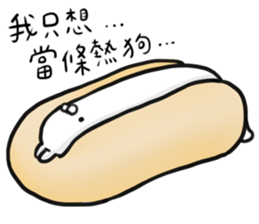

個人簡介
今年剛滿30，是在傳產擔任基層主管的社畜，畢業自冷門科系，曾經待過生技業、環境顧問業及目前的化工傳產，隨然旁人看我可能覺得薪水還不錯且穩定，但自己卻始終找不到對工作的熱忱，加上每天死氣沉沉的辦公室環境，還有充滿爾虞我詐的派系鬥爭，其實心理上蠻累人的。我喜歡打慢壘、練格鬥技、挑戰自我，在各種運動項目上表現都還不錯，所以喜歡團隊合作、嘗試創新事務，其實與現在的工作內容格格不入，很難想像自己要這樣做到退休。這幾個月來思索著自己想要往哪個產業去，漸漸找到一些端倪，希望可以往與運動科學或醫學結合的穿戴式電子消費用品走，做出能讓自己也愛不釋手的3C產品。瀏覽過國內外相關職缺，其實就算是往PM或工程師走，懂一些程式語言勢必是真正的硬實力，沒有這些技能，競爭力真的是差很大。上述的嚮往讓我會往AI深度學習、大數據方向走，因此自己的目標會是SQL與Python等後端程式語言，期許成為資料科學家結合PM等功能的跨領域人才。
為什麼想成為前、後端、或全端工程師?
想要學會建置資料庫，並從資料庫系統提取並分析有用的資訊，例如使用網路爬蟲自動匯入資料庫，撰寫演算法自行分析結果，隨時更新商業策略，甚至是撰寫各種模擬運算方法，用在自己的運動表現分析，或是投資上。
為了成為軟體工程師，你曾經做過什麼努力?
買過R語言與Python的書籍(碁峯出版社)，但往往看不太下去，曾經在公司的製程改善案使用R來進行統計分析，不過不太熟練，後來的職務內容也用不太到就荒廢掉了。除了目前觀看彭彭老師的教學影片外，也會抽空了解CS50課程內容。
如果參與這個計劃，會怎麼安排學習時間?
其實已經提出離職，但被公司努力慰留中，心中的終點是在農曆過年前離開公司，若順利參與課程，會盡早離開公司專心投入，目前預計第一階段會先利用下班時間與周末進行學習，平日下班後的固定運動時間就先取消，預計應該可以擠出30小時/週以上的時間。
如果參與這個計劃，你預期會碰到是什麼困難?你打算怎麼面對並解決它?
由於過去沒有相關學習經歷，很難想像程式語言的難度會到哪裡，目前已經碰到不少困難，像是Github的使用還要會輸入CMD、CSS密密麻麻的指令內容，這些指令都要不斷重複輸入練習，其實需要一些時間消化。目前已經與一位順利轉職前端工程師的學弟討論過學習程式的問題，若有一些困難也可以先找他一起討論。
是否有想要加入的軟體公司? 為什麼想加入該公司?
最近有看到AR眼鏡的運用模擬，讓我感到非常有興趣。希望可以加入這些消費性電子產品的設計端或製造端，就像黃金圈的概念，做出具創新性、讓消費者有卓越的使用經驗之產品，就像Apple、Google、Microsoft等國際巨擎，或是廣達、Garmin等台灣就有生產工廠的大公司。
想對我們說的話?
我覺得自己跟這個Project的目標似乎有一點點差異(也許是對整個系統不夠熟悉)，主要是想走向資料科學家，能配合目前的學經歷，創造更多價值，也希望找到符合自己興趣的工作。不管有沒有順利入選第一階段，但還是希望彭彭老師能給出一點建議，不知道目前這樣的方向，有沒有需要修正的地方?
給我建議
填寫建議